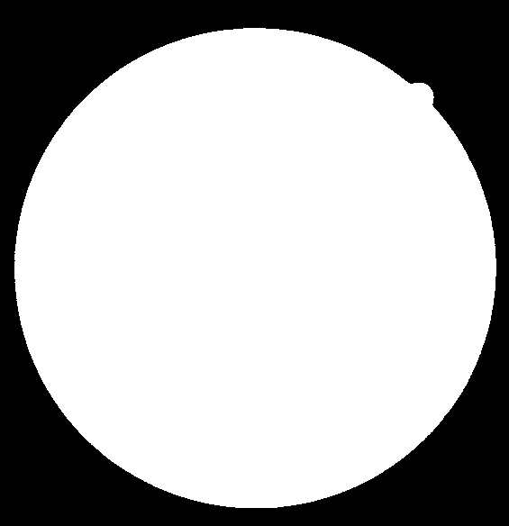

Trainable COSFIRE filters for vessel delineation with application to retinal images
Podczas drugich zajęć laboratoryjnych zajmowałyśmy się analizowaniem obrazów przy użyciu filtrów COSFIRE.
B-COSFIRE- Bar-Selective Combination Of Shifted FIlter REsponses.
Filtr B-COSFIRE jest oparty na idei COSFIRE[1]. Świetnie nadaje się do wykrywania elementów przypominających kształtem pręty takich jak np. naczynia krwionośne. Dlatego został użyty do segmentacji naczyń krwionośnych siatkówki. Filtr B-COSFIRE jest nieliniowy. Osiąga on selektywność orientacji, mnożąc wynik grupy filtrów różnicowych Gaussa (DoG). Charakteryzuje się tolerancją odchyleń i niewielką deformacją. Sektywność filtru nie jest z góry ustalona w implementacji, ale określana przez użytkownika. Istniją filtry symetryczne wrażliwe na elementy w kształcie pręta, oraz niesymetryczne rozpoznawające ich zakończenia. Istnieje duży bank filtrów B-COSFIRE, składający się z 21 detektorów naczyń[2], które używane są dla rozpoznawania naczyń o różnych grubościach oraz 21 detektów ich zakończeń.
Kody, które wykorzystywałyśmy, są ze
strony.
.
Do analizy wykorzystałyśmy następujący obraz siatkówki
output
A struct that contains the BCOSFIRE filters response
and the final segmented image. In details
- output.respimage: response of the combination of a symmetric and an
asymemtric COSFIRE filters
- output.segmented: the binary output image after
thresholding
Rezultat działania funkcji

Symmetric filter params
symmfilter.alpha = 0.9;
asymmfilter.sigma= 0.9;